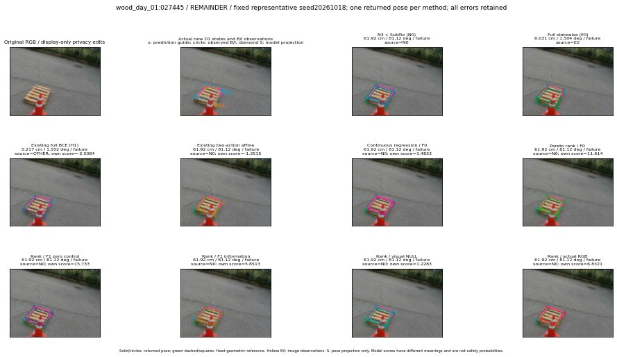

실선은 반환 자세, 초록 점선은 고정 기하 참조입니다. S는 영상 관측이 아닙니다. 점수는 모델별 의미가 다르며 보정된 안전 확률이 아닙니다. 개인정보 처리는 표시 사본에만 적용했습니다.
| 방법·seed | 위치 / 회전 / 공동성공 | 실제 출처 | 선택 후보 | 각 모델 자체 점수 |
|---|---|---|---|---|
| N0 | 61.92 cm / 81.12 deg / failure | N0 | N/A | N/A |
| E0 | 6.031 cm / 1.504 deg / failure | E0 | N/A | N/A |
| E0_REGENERATED | 6.031 cm / 1.504 deg / failure | E0 | E0_REGENERATED | N/A |
| POSEFIX_SUBPIX_PF_ANCHOR | 57.05 cm / 81.56 deg / failure | OTHER | N/A | N/A |
| POSEFIX_SUBPIX_YOLO_ANCHOR | 57.05 cm / 81.56 deg / failure | OTHER | N/A | N/A |
| D1_H1_MLP_s20261018 | 5.217 cm / 1.552 deg / failure | OTHER | G10/SWAPPED_WD/sample/1 | -2.5084311962127686 |
| D1_H1_MLP_s20261019 | 5.217 cm / 1.552 deg / failure | OTHER | G10/SWAPPED_WD/sample/1 | -2.5471229553222656 |
| D1_H1_MLP_s20261020 | 5.217 cm / 1.552 deg / failure | OTHER | G10/SWAPPED_WD/sample/1 | -3.514070987701416 |
| D1_H1_PAIR_MLP_s20261018 | 6.031 cm / 1.504 deg / failure | E0 | E0_REGENERATED | -2.3583061695098877 |
| D1_H1_PAIR_MLP_s20261019 | 61.92 cm / 81.12 deg / failure | N0 | N0 | -2.469980478286743 |
| D1_H1_PAIR_MLP_s20261020 | 61.92 cm / 81.12 deg / failure | N0 | N0 | -3.6641790866851807 |
| D1_H1_PAIR_ROLE_AFFINE_s20261018 | 61.92 cm / 81.12 deg / failure | N0 | N0 | -1.3514741659164429 |
| D1_H1_PAIR_ROLE_AFFINE_s20261019 | 61.92 cm / 81.12 deg / failure | N0 | N0 | -1.7772839069366455 |
| D1_H1_PAIR_ROLE_AFFINE_s20261020 | 61.92 cm / 81.12 deg / failure | N0 | N0 | -1.3464518785476685 |
| R_CONT_F0_s20261018 | 61.92 cm / 81.12 deg / failure | N0 | N0 | 1.4832686185836792 |
| R_CONT_F0_s20261019 | 61.92 cm / 81.12 deg / failure | N0 | N0 | 1.7456810474395752 |
| R_CONT_F0_s20261020 | 61.92 cm / 81.12 deg / failure | N0 | N0 | 1.7875334024429321 |
| R_ORDER_F0_s20261018 | 61.92 cm / 81.12 deg / failure | N0 | N0 | 11.614490509033203 |
| R_ORDER_F0_s20261019 | 61.92 cm / 81.12 deg / failure | N0 | N0 | 7.041928291320801 |
| R_ORDER_F0_s20261020 | 61.92 cm / 81.12 deg / failure | N0 | N0 | -7.962186336517334 |
| R_ORDER_F1_ZERO_s20261018 | 61.92 cm / 81.12 deg / failure | N0 | N0 | 15.732985496520996 |
| R_ORDER_F1_ZERO_s20261019 | 61.92 cm / 81.12 deg / failure | N0 | N0 | 9.391732215881348 |
| R_ORDER_F1_ZERO_s20261020 | 61.92 cm / 81.12 deg / failure | N0 | N0 | 10.2886381149292 |
| R_ORDER_F1_s20261018 | 61.92 cm / 81.12 deg / failure | N0 | N0 | 5.851327419281006 |
| R_ORDER_F1_s20261019 | 61.92 cm / 81.12 deg / failure | N0 | N0 | 4.827975749969482 |
| R_ORDER_F1_s20261020 | 61.92 cm / 81.12 deg / failure | N0 | N0 | 2.19063663482666 |
| V_ORDER_NULL_s20261018 | 61.92 cm / 81.12 deg / failure | N0 | N0 | 1.2282949686050415 |
| V_ORDER_NULL_s20261019 | 61.92 cm / 81.12 deg / failure | N0 | N0 | -0.256035178899765 |
| V_ORDER_NULL_s20261020 | 61.92 cm / 81.12 deg / failure | N0 | N0 | 6.263134956359863 |
| V_ORDER_RGB_s20261018 | 61.92 cm / 81.12 deg / failure | N0 | N0 | 6.832132339477539 |
| V_ORDER_RGB_s20261019 | 61.92 cm / 81.12 deg / failure | N0 | N0 | 0.5800357460975647 |
| V_ORDER_RGB_s20261020 | 61.92 cm / 81.12 deg / failure | N0 | N0 | -4.830715656280518 |